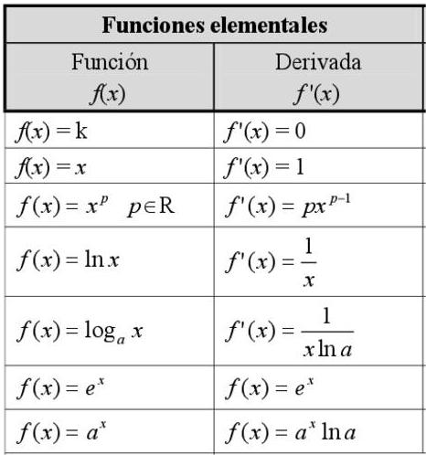
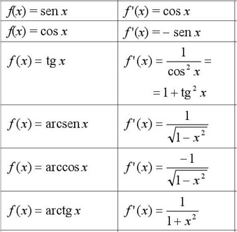

¡Derivadas!
de Lorena Lucas Baños
Definición:
Se llama función derivada y se denota $f'(x)$, a la función que asocia a cada abcisa $x$, la derivada en ese valor.
\[f'(x)=\lim_{h\rightarrow 0}\frac{f(x+h)-f(x)}{h} . \]
Derivadas de funciones conocidas:


Todas estas se pueden deducir con la definición de derivada de una función, ¡pruébalo!.
Derivadas de operaciones con funciones:
- Derivada del producto de un número por una función: $(k\cdot f)'(x)=k\cdot f'(x)$, para $k \in \R$.
- Derivada de la suma de dos funciones: $(f+g)'(x)=f'(x)+g'(x).$
- Derivada del producto de dos funciones: $(f\cdot g)'(x)=f'(x)\cdot g(x)+f(x)\cdot g'(x).$
- Derivada del cociente de dos funciones: $(\frac{f}{g})'(x)=\frac{f'(x)\cdot g(x)-f(x)\cdot g'(x)}{(g(x))^2}.$
Regla de la cadena:
La derivada de la composición de dos funciones se obtiene aplicando la regla de la cadena:
\[(f\circ g)'(x) = f'(g(x))\cdot g'(x).\]
Recta tangente:
Para calcular la recta tangente de una función $f(x)$ en el punto de abcisa $x=a$, sabemos que:
- Pasará por el punto $(a,f(a))$.
- La derivada de la función en el punto es la pendiente de la recta tangente a la función en dicho punto, es decir, $m=f'(a).$
Utilizaremos la ecuación punto pendiente para definir la recta tangente. Recordemos que tiene la forma: $y-y_0=m\cdot (x-x_0).$
Por tanto, la ecuación de la recta tangente es:
\[y-f(a)=f'(a)\cdot (x-a). \]